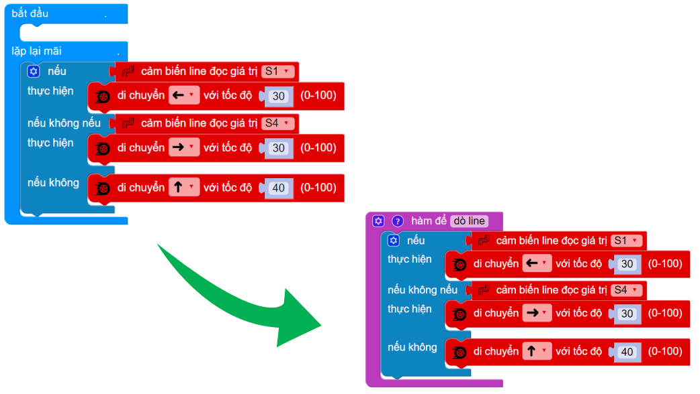

15. Bài 11: Hoàn trả vật phẩm
Tuy gặp nhiều khó khăn, nhưng Rover cũng đã tìm được đồ vật bị mất. Bây giờ, Rover sẽ hoàn trả vật phẩm về cho chủ của nó. Do số lượng vật phẩm quá nhiều nên Rover sẽ phải di chuyển nhiều lần.
Mục tiêu
Rover sẽ cần đi từ điểm A đến B và ngược lại. Đoạn vạch đen ở cuối mỗi đoạn là đặc điểm cho Rover biết đã đến cuối đường

Giới thiệu về hàm
Với những chương trình dài có nhiều khối lệnh, chúng ta sẽ sử dụng Hàm để rút gọn những chương trình đó.
{kind=link}
Hàm giống như việc bạn tạo thêm một loại khối lệnh mới để sử dụng, và khối lệnh này bao gồm các khối lệnh con bên trong

Cách tạo và sử dụng hàm
Chọn mục Nâng cao >> Hàm: sử dụng khối lệnh “hàm để làm gì đó” để tạo hàm
{kind=link}
Đưa các khối lệnh vào trong hàm, sau đó đặt tên cho hàm.
{kind=link}
Khối lệnh mới với tên vừa đặt sẽ xuất hiện trong mục Hàm.

Viết chương trình
Viết thuật toán

Sử dụng lại chương trình của chương 10 để tạo thành hàm “dò line”

{kind=link}
Gọi hàm “dò line” vào chương trình chính, sau đó tạo điều kiện phát hiện ra vạch nằm ngang thì dừng lại

Rover sẽ quay lại cho đến khi gặp được vạch thẳng di chuyển (S4 đọc được vạch đen)
{kind=link}
Lưu ý: Nếu xóa Hàm bên ngoài, hàm trong chương trình chính sẽ biến mất
Chương trình mẫu
Hoàn trả vật phẩm: Tại đây